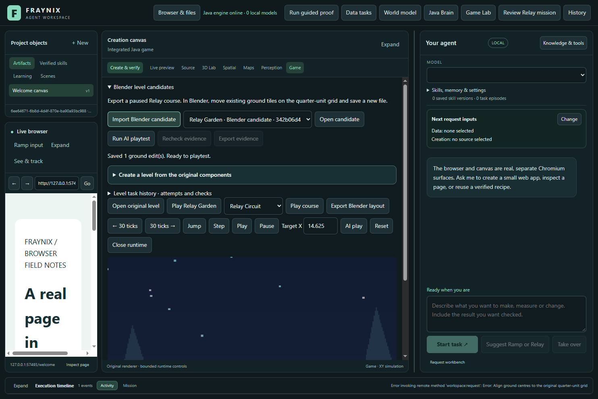
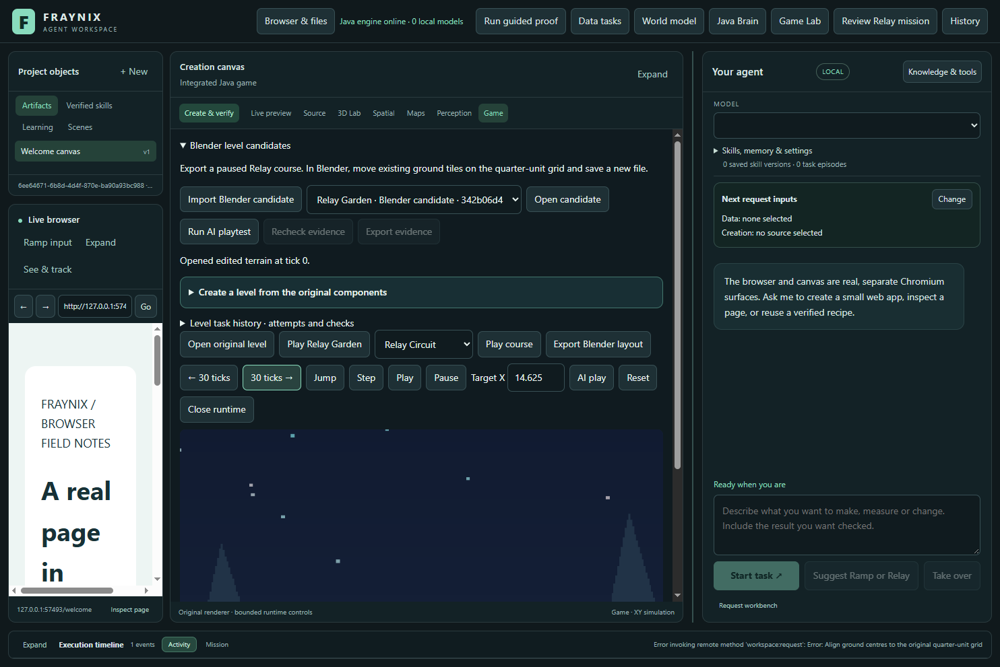
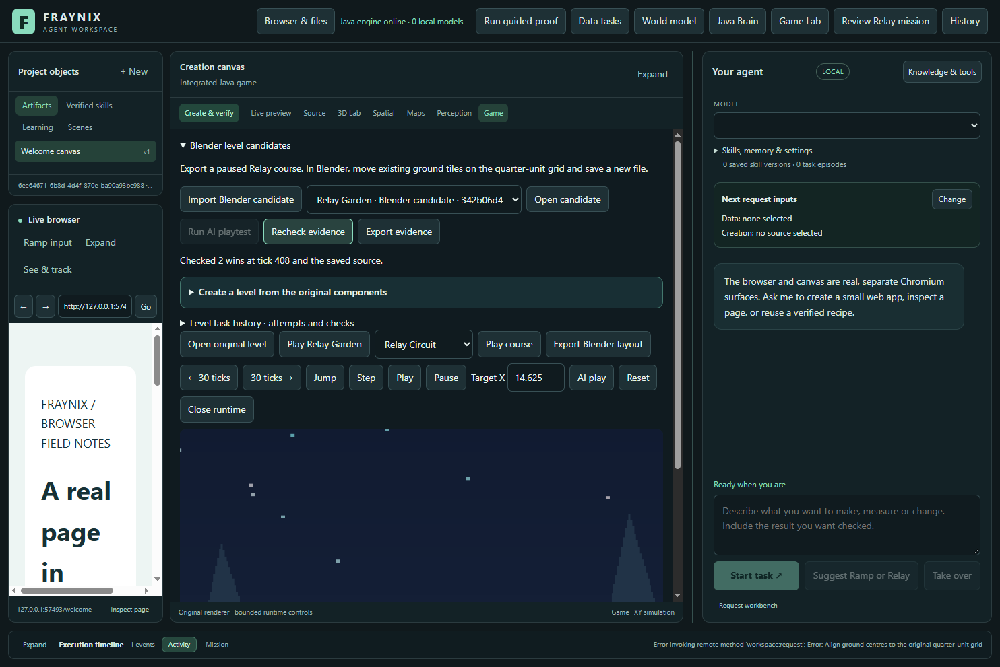

Turn a Blender edit into a verified playable Game Lab candidate
Move original Relay ground tiles in Blender, import a separate Game Lab candidate, and verify its playability with two fresh Java AI runs.

The Blender translation received a separate candidate

The candidate advances in the native interactive runtime

Java rechecks the two completed AI playtests
System files
Open source